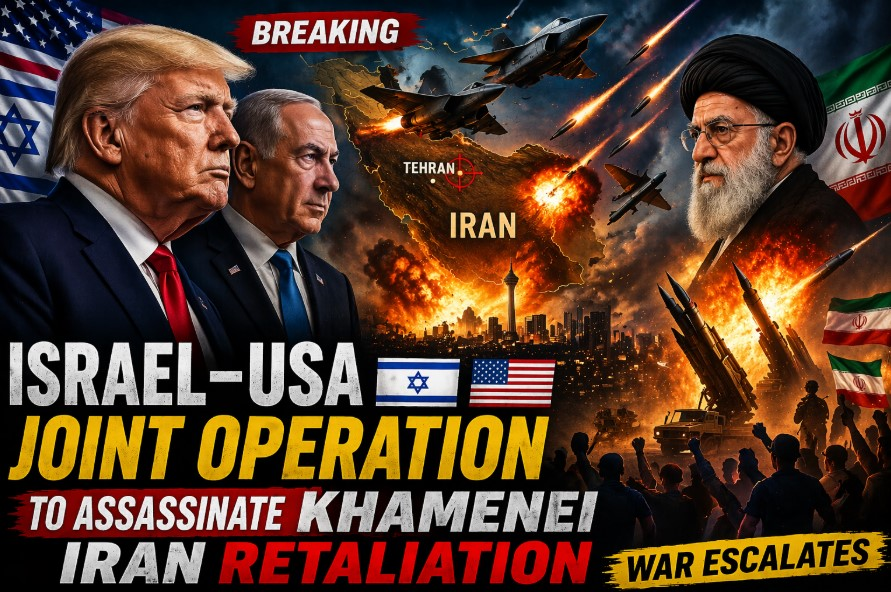

By early 2026, the Middle East had become a complex web of competing interests, unresolved tensions, and fragile equilibriums. Understanding the prelude to the Iran-USA War requires examining multiple intersecting factors:
These underlying tensions created a volatile environment where a single triggering event could rapidly escalate into broader confrontation.
In this fictional scenario, a sudden leadership crisis in Tehran creates immediate regional instability. [Note: This describes a hypothetical scenario element for narrative purposes only] The event triggers immediate security protocols across Iranian institutions and raises urgent questions about succession, command authority, and regional power dynamics.
Hypothetical Scenario Regional ImpactRegional actors assess potential shifts in Iranian foreign policy direction. US intelligence communities monitor for signs of internal Iranian power struggles that could affect regional stability. Diplomatic channels activate contingency protocols for potential escalation scenarios.
Intelligence AnalysisIn this hypothetical framework, the leadership crisis creates uncertainty that multiple actors seek to exploit or manage. The scenario explores how institutional continuity mechanisms, regional diplomacy, and crisis management protocols might function under extreme pressure. This element serves to examine succession dynamics, institutional resilience, and diplomatic crisis response in a controlled analytical environment.
Within this fictional scenario, Israel's actions and perceptions play a significant role in regional dynamics:
In this fictional framework, Israeli diplomatic channels engage with US, European, and regional partners to coordinate responses to the evolving situation. Scenario depicts intelligence sharing, contingency planning, and diplomatic messaging aimed at preventing escalation while maintaining deterrence postures.
Diplomacy Scenario AnalysisThis scenario element allows examination of how regional powers might navigate complex crisis environments, balance deterrence with de-escalation, and coordinate with international partners under pressure. The hypothetical framework enables exploration of diplomatic mechanisms, intelligence sharing protocols, and crisis management strategies without endorsing any particular policy position.
The fictional scenario depicts Iran's institutional response to the hypothetical crisis through multiple channels:
In this fictional framework, Iranian institutions engage in complex crisis management: maintaining strategic deterrence while avoiding actions that could trigger unintended escalation. Scenario depicts diplomatic outreach through Omani, Qatari, and other regional channels to establish communication pathways and prevent miscalculation.
Crisis Management Scenario AnalysisThe fictional scenario depicts a rapid escalation sequence in the final days before the March 4 naval clash:
In this hypothetical scenario, increased naval activity in the Gulf of Oman creates conditions for potential miscalculation. US and Iranian naval forces operate in closer proximity than usual, with both sides conducting enhanced surveillance and readiness protocols.
Escalation Maritime SecurityScenario depicts intensified diplomatic activity through multiple channels: Omani mediation efforts, Swiss diplomatic facilitation, and backchannel communications aimed at establishing de-escalation protocols and crisis communication mechanisms.
Diplomacy Crisis ManagementIn this fictional framework, the final 24 hours before the March 4 incident see heightened alert status on both sides, with naval commanders operating under enhanced rules of engagement and diplomatic channels working to establish last-minute de-escalation protocols.
Pre-Conflict Last-Minute DiplomacyThis hypothetical escalation sequence allows examination of how crisis dynamics can develop rapidly even when multiple actors seek to avoid conflict. The scenario explores communication failures, misperception risks, institutional pressures, and the challenges of crisis management under extreme time pressure. This analytical framework helps identify potential intervention points and de-escalation mechanisms that might prevent similar real-world crises.
Scenario depicts increased regional tensions following stalled nuclear diplomacy, with multiple incidents testing maritime security protocols and diplomatic crisis management mechanisms.
Hypothetical scenario shows increased diplomatic activity through multiple channels aimed at preventing escalation, including Omani mediation, Swiss facilitation, and backchannel communications.
Scenario depicts a fictional leadership crisis in Tehran that creates immediate regional uncertainty and activates crisis management protocols across multiple institutions and diplomatic channels.
Hypothetical CatalystFictional scenario depicts complex crisis management efforts: institutional continuity measures, diplomatic signaling, regional coordination, and last-minute de-escalation attempts that ultimately prove insufficient to prevent the March 4 naval incident.
Hypothetical scenario depicts the final escalation sequence: heightened maritime tensions, failed last-minute diplomatic efforts, and institutional pressures that culminate in the March 4 naval clash that begins our 32-day coverage timeline.
Pre-ConflictThis fictional scenario serves multiple analytical purposes:
This scenario is explicitly fictional and designed for analytical purposes only. It does not predict, endorse, or advocate for any particular real-world outcomes, policies, or actions. The hypothetical elements serve to explore crisis dynamics, diplomatic mechanisms, and conflict resolution frameworks in a controlled analytical environment that allows examination of complex geopolitical interactions without real-world consequences.
This background article provides context for the 32-day Iran-USA War coverage timeline that begins with the March 4, 2026 naval clash and follows the conflict through diplomatic resolution, verification mechanisms, and sustained implementation phases.